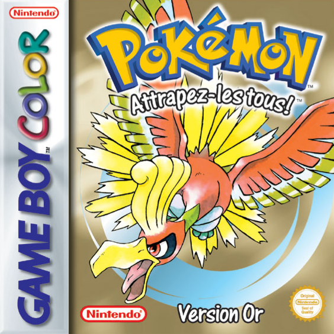 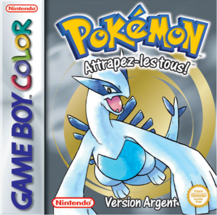 Description Le joueur commence son voyage de Bourg Geon, où le Professeur Orme lui demande d'aller à la maison de M. Pokémon pour découvrir ce qui le passionnait tellement. Orme fournit au joueur l'un des trois Pokémon de départ, Germignon , Héricendre ou Kaiminus. Après que la découverte de M. Pokémon se soit avérée être un Œuf, le joueur retourne à Bourg Geon, mais il découvre qu'un garçon aux cheveux roux suspect, vu caché à l'extérieur du laboratoire plus tôt, a volé l'un des Pokémon du Professeur. Après l'avoir battu et être retourné à Bourg Geon, le joueur donne le nom du garçon (son nom par défaut est Silver ou Gold) à un officier de police qui est venu enquêter sur l'incident. Orme est étonné par l'Œuf et insiste pour l'étudier, permettant au joueur de garder le Pokémon avec lequel il a voyagé en tant que Pokémon de départ. À partir de là, il encourage le joueur à parcourir Johto et à défier les huit Champions d'Arènes, Albert, Hector, Blanche, Mortimer, Chuck, Jasmine, Frédo et Sandra, et finalement la Ligue Pokémon. Avec la première Arène dans la ville voisine de Mauville, le joueur part à l'aventure.
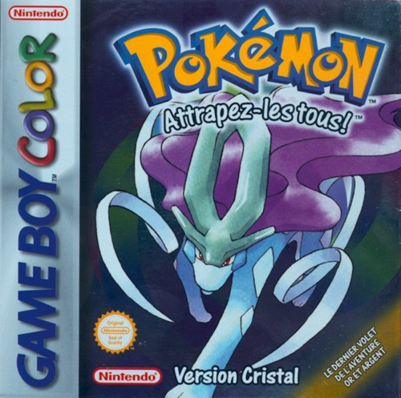 Description la version complémentaire de Pokémon Or et Argent, sortie sur Game Boy Color le 14 décembre 2000 au Japon et le 31 octobre 2001 en Europe. Comme toutes les « troisièmes versions », il s'agit globalement du même jeu avec quelques améliorations.
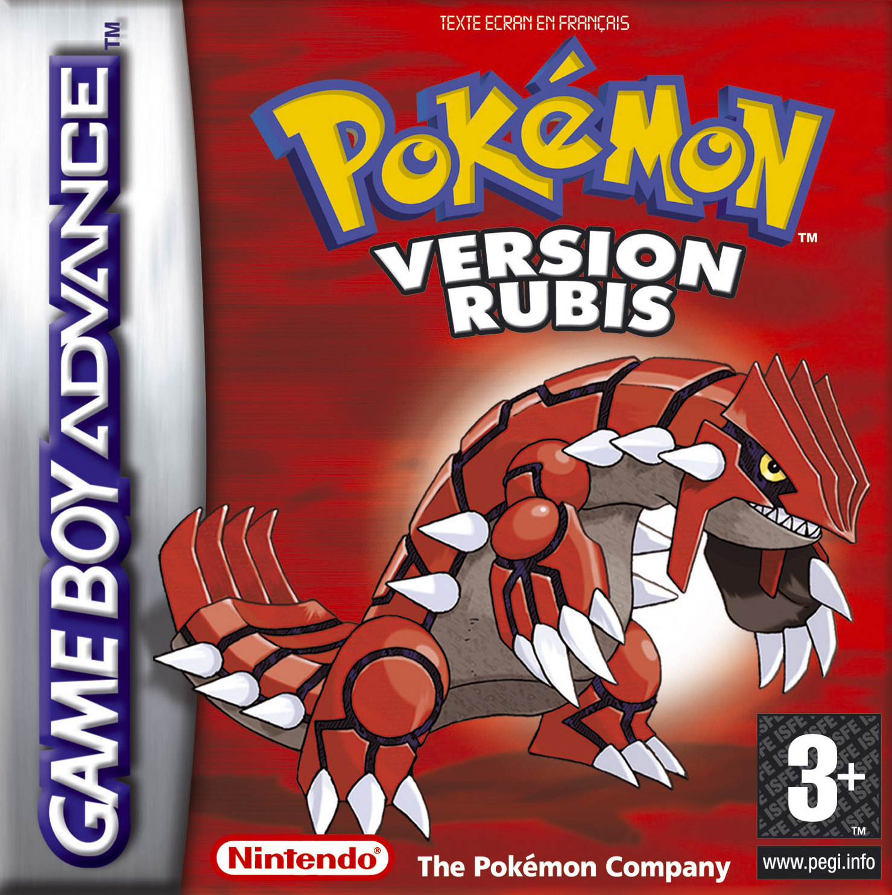 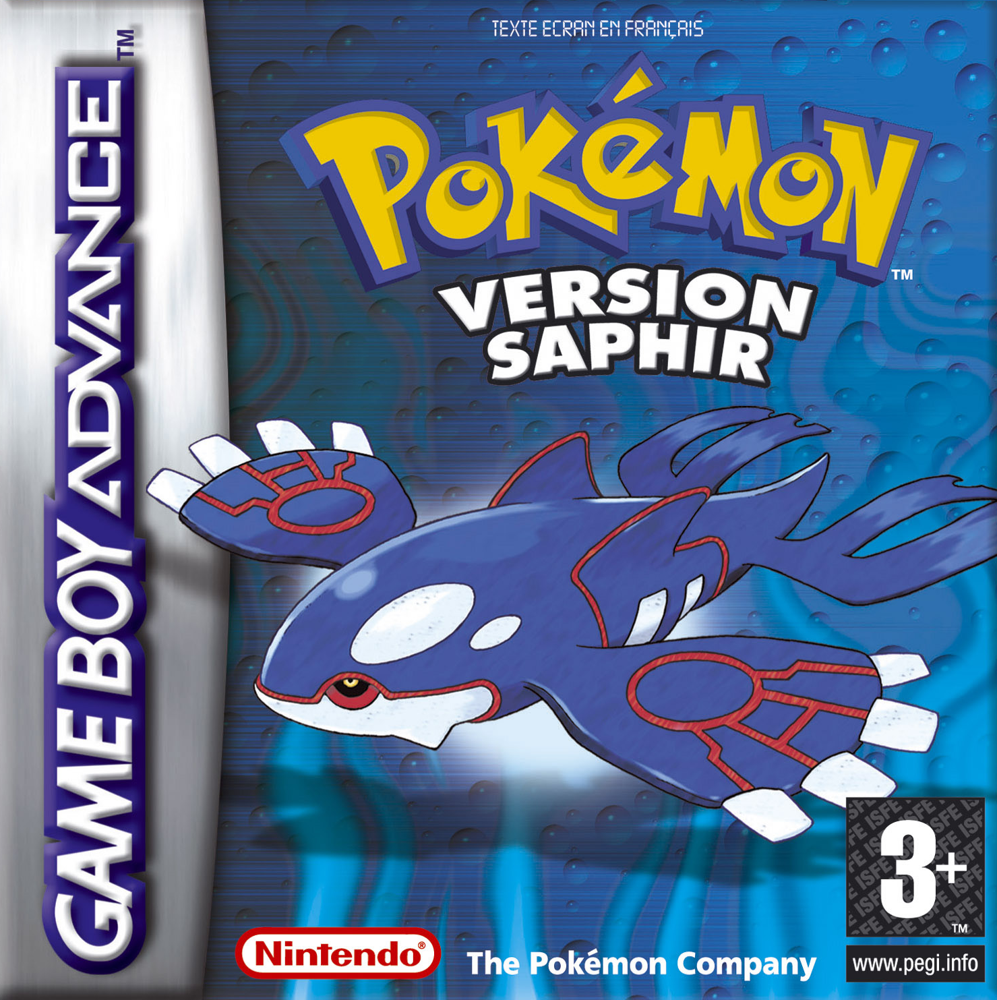 Description Le joueur incarne un jeune Dresseur en provenance de la région de Johto et dont la famille a déménagé à Bourg-en-Vol, une petite bourgade de la région de Hoenn, afin que le père, Norman, puisse assurer ses fonctions de Champion de l'Arène de Clémenti-Ville. Peu de temps après son installation, le joueur fait la rencontre du Professeur Seko, en mauvaise posture puisque poursuivi par un Medhyèna. En choisissant son Pokémon de départ pour lui venir en aide, il fait son premier choix dans une aventure qui l'amènera à affronter une multitude de Dresseurs, remporter des Badges d'Arène pour finalement affronter le Conseil 4, mais également déjouer les plans d'une Team maléfique et faire la rencontre d'un Pokémon légendaire menaçant l'équilibre du monde.
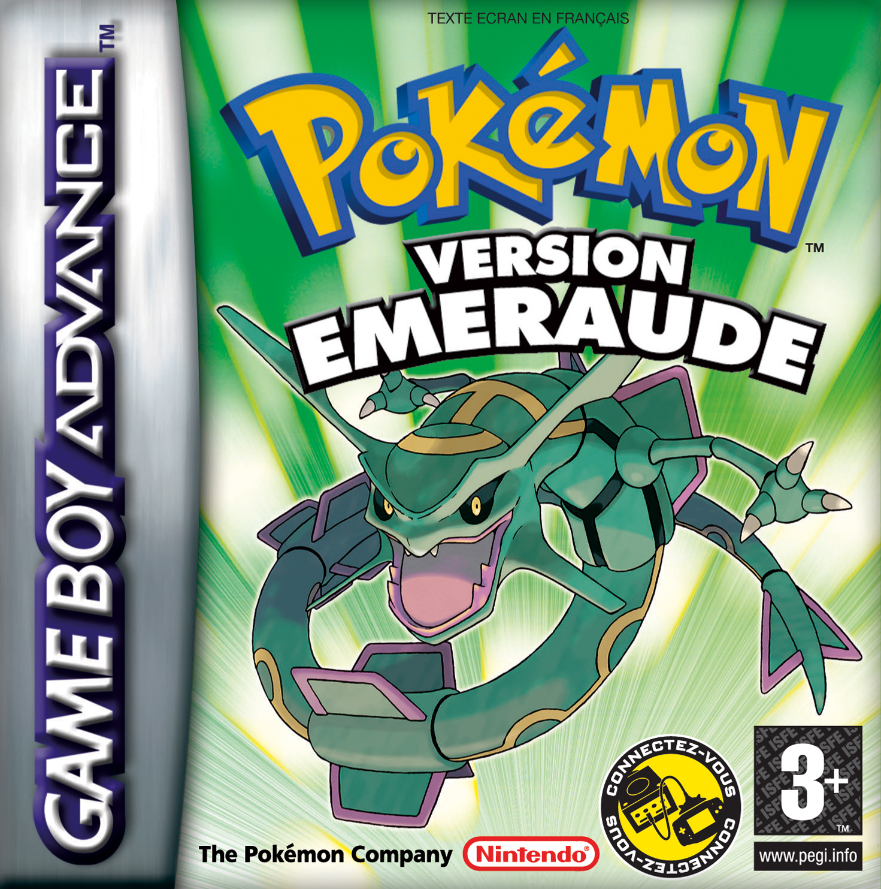 Description C'est le successeur de Pokémon Rubis et Saphir, la « troisième version », comparable à Pokémon Jaune et Cristal. Sa pochette est illustrée par le Pokémon légendaire Rayquaza. L'histoire se passe donc encore à Hoenn et le scénario reste globalement le même, même si de nombreux aspects du jeu ont été remaniés.
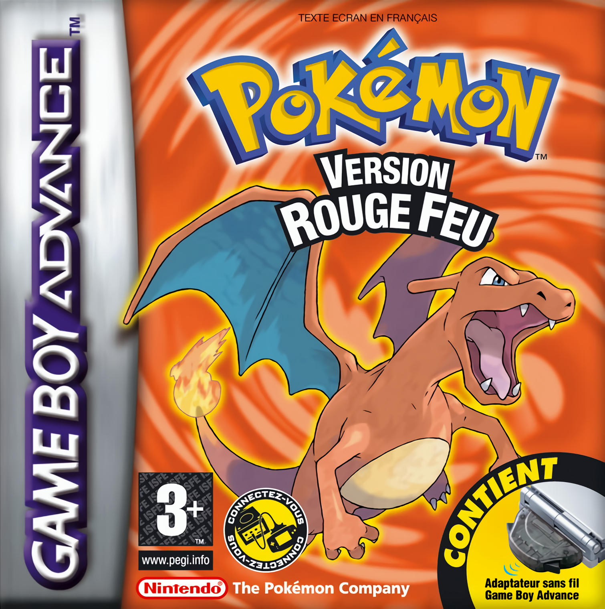 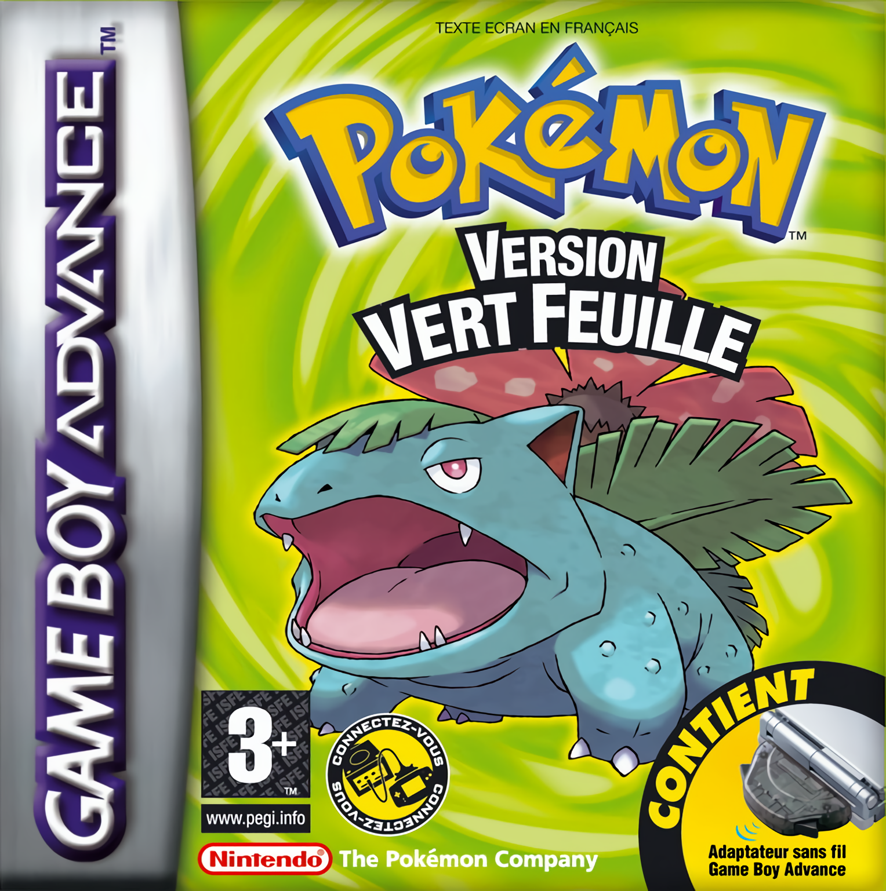 Description Le joueur incarne un jeune garçon ou une jeune fille bien décidé(e) à devenir Maître Pokémon. Le Professeur Chen lui offre son 1er Pokémon de son choix pour qu'il obtienne les 8 Badges de la région, qu'il/elle complète le Pokédex et qu'il/elle batte la Team Rocket. Le scénario est en fait globalement le même que dans les jeux Pokémon Rouge et Bleu.
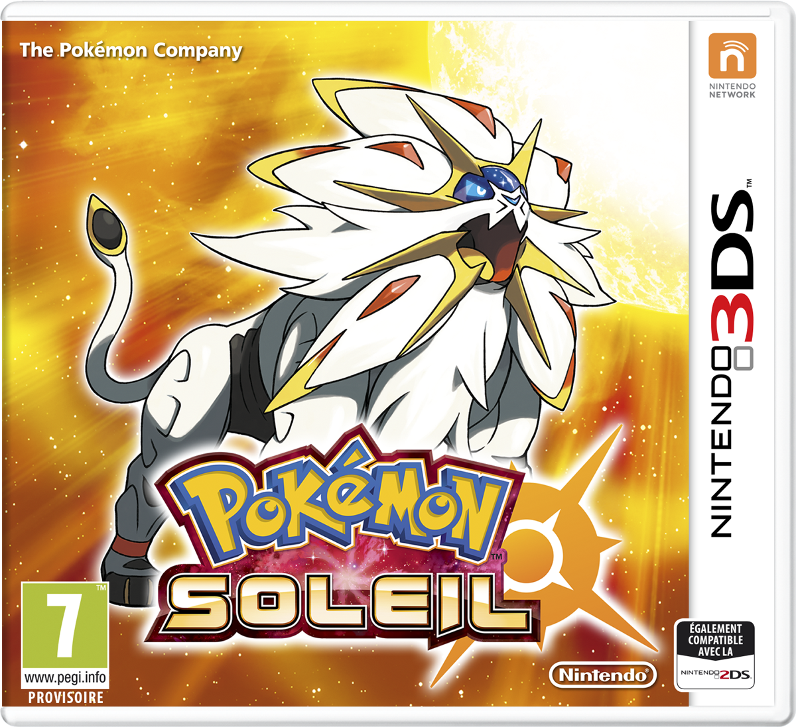 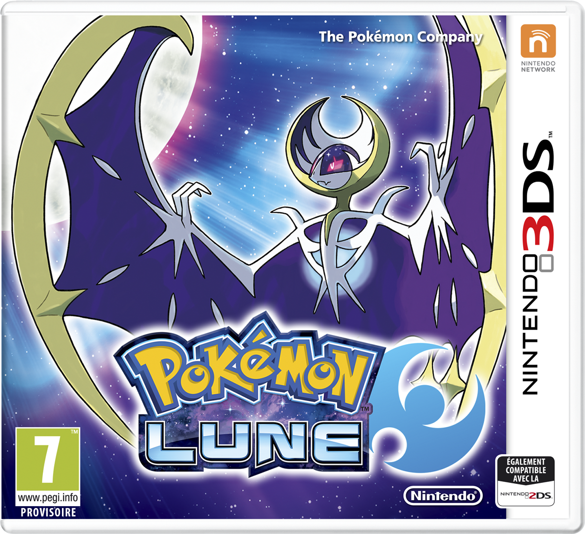 Description Le jeu se déroule dans la région insulaire et paradisiaque d'Alola, inspirée de l'île d'Oahu, dans l'archipel d'Hawaï. Cette région est composée de quatre îles, ainsi que d'une île artificielle, le paradis Æther. Chacune des îles naturelles est sous la surveillance de Pokémon protecteurs, appelés les Toko ; vénérés par les habitants, ce sont eux aussi qui choisissent les doyens. La première île est Mele-mele, où le héros a déménagé, et son protecteur est Tokorico ; la deuxième île est Akala, dont le Pokémon protecteur est Tokopiyon ; la troisième, Ula-Ula, dont le Pokémon protecteur est Tokotoro ; la dernière s'appelle Poni, dont le Pokémon Protecteur est Tokopisco.
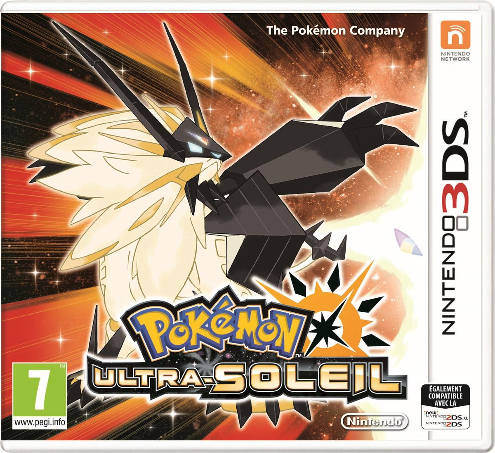 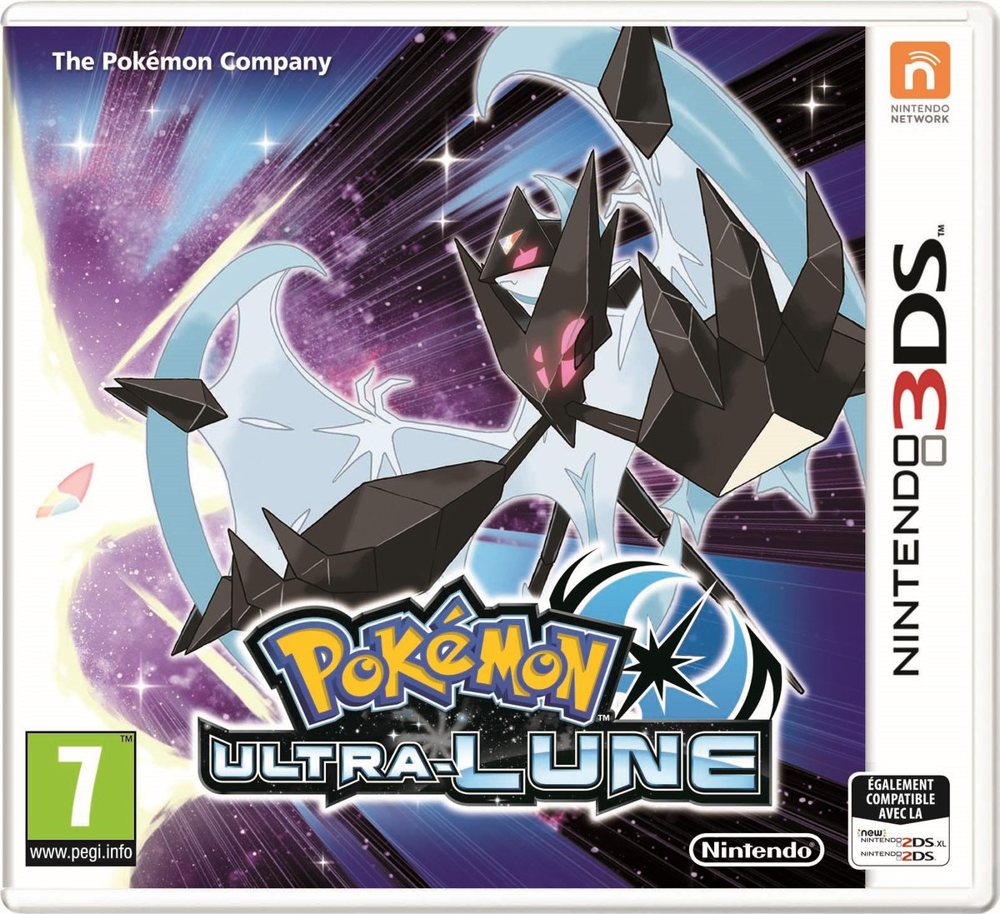 Description Le jeu se déroule dans la région insulaire et paradisiaque d'Alola, inspirée de l'île d'Oahu, dans l'archipel d'Hawaï. Cette région est composée de quatre îles, ainsi que d'une île artificielle, le paradis Æther. Chacune des îles naturelles est sous la surveillance de Pokémon protecteurs, appelés les Toko ; vénérés par les habitants, ce sont eux aussi qui choisissent les doyens. La première île est Mele-mele, où le héros a emménagé, et son protecteur est Tokorico ; la deuxième île est Akala, dont le Pokémon protecteur est Tokopiyon ; la troisième, Ula-Ula, dont le Pokémon protecteur est Tokotoro ; la dernière s'appelle Poni, dont le Pokémon protecteur est Tokopisco.
Description Le joueur incarne un enfant de Bourg Palette dans la région de Kanto. En allant à la rencontre du Professeur Chen, il tombe sur un Pokémon sauvage inhabituel qui se prend d'affection pour lui, au point de devenir le Pokémon de départ du jeune Dresseur incarné. Le joueur a pour mission de remplir le Pokédex, ce qui l'amène à obtenir les Badges des huit Arènes locales et à croiser le chemin d'une organisation criminelle qu'il décide d'arrêter. Pour remplir son objectif, le joueur doit au final affronter les Dresseurs les plus puissants de la région, le Conseil 4, et partir à la recherche des Pokémon légendaires.
 Wiki
Wiki